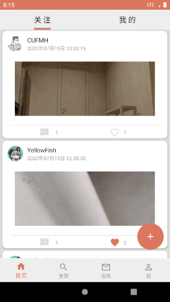
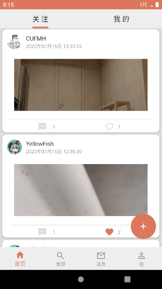
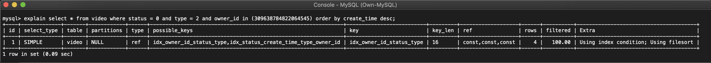

| 登录页 | 注册页 |
|---|---|
| 关注页 | 我的页 |
|  |  |
| 发现页 | 动态页 |
 |
|
| 个人页 | 个人主页 |
| 粉丝页 | 订阅页 |
| 视频页（视频播放） | 视频页（视频收起） |
| 其他用户的个人主页 | 视频上传页 |
 |
title: Android - Goldfish
date: 2020-08-01 14:00:00
tags:
categories:
Goldfish 是一款具有 互动交友、视频 Feeds 功能的广播式社交 APP。
具体的服务配置位于 Server/cmd/server/config.toml 文件中，可自定义配置。由于服务依赖于 MySQL、Redis、FS 的运行，因此我们需要提前启动这些依赖服务。当前，我们已将这些依赖服务运行在外网环境。
# 进入 Server/ 目录
cd Server/
# 启动 go-fastdfs 对象存储服务
cd fs/
docker-compose up -d
# 执行编译
sh ./scripts.sh build
# 运行服务，请确保各项依赖服务均已正常运行
sh ./scripts.sh run
# 停止服务
sh ./scripts.sh stop
使用 Android Studio 即可。
| 登录页 | 注册页 |
|---|---|
| 关注页 | 我的页 |
|  | |
| 发现页 | 动态页 |
|
|
| 个人页 | 个人主页 |
| 粉丝页 | 订阅页 |
| 视频页（视频播放） | 视频页（视频收起） |
| 其他用户的个人主页 | 视频上传页 |
|
在项目中，为了提供用户关注、用户取消关注的服务，我们需要选择合适的数据库来实现用户关系服务。参考新浪微博在用户社交关系的实践，我们使用 Redis 存储用户关系。通过维护 user_id:follow 和 user_id:follower 两个集合，我们可实现用户关注关系的维护。假设用户 A 关注了用户 B ，那么有以下过程：
A:follow 添加了 B 成员B:follower 添加了 A 成员在 Feed 列表的设计中，存在两种设计方法：读扩散、写扩散。
在当前实现中，我们使用读扩散的设计，因为使用写扩散设计，需要复杂的写入逻辑，而且还需要考虑到新关注对象如何获取之前的 Feed 列表的问题，业务层需进行补偿操作。
KotlinMVVM，利用 Android DataBinding 实现绑定Glide 用于实现网络图片加载UniversalVideoView: 用于实现网络视频播放OkHttp3: 用于提供易用的 Http 客户端实现Retrofit2: 用于提供简洁的 HTTP 接口Rxjava: 和 Retrofit2 结合，用于网络请求的异步处理Gson: 与 Retrofit 结合，用于解析 JSON 数据其中：
data.datasource -- 数据源
data.model -- 一些 Http 请求结果的封装
data.repository -- 存储数据的类，ViewModel 与这里的类进行交互
data.service -- 访问 HTTP 服务的类，其中包括 Http 接口调用和接口格式
ui.feed -- Feed 流相
ui.follow -- 关注与粉丝页面
ui.homepage -- 个人页
ui.main -- 主页面，包括发现、消息、动态、关注、个人页
ui.user -- 用户登录注册代码
ui.util -- UI 帮助类
ui.video -- 视频详情页代码
data 包类结构：
ui 包类结构
Activity/Layout <--(DataBinding)--> ViewModel <----> Model <--(Retrofit/OkHttp)--> Server
Android DataBinding 库允许我们在布局文件中描述属性与 ViewModel 的绑定关系，比如 VideoActivity 展示视频信息的部分代码如下：
<layout xmlns:android="http://schemas.android.com/apk/res/android"
xmlns:app="http://schemas.android.com/apk/res-auto"
xmlns:tools="http://schemas.android.com/tools">
<data>
<variable
name="viewModel"
type="com.gitee.jiahonzheng.mad2020.ui.video.VideoViewModel" />
</data>
....
<TextView
android:id="@+id/card_video_username"
android:layout_width="wrap_content"
android:layout_height="wrap_content"
android:layout_marginLeft="90dp"
android:layout_marginTop="18dp"
android:text="@{viewModel.username}"
android:textColor="@color/colorGreyLightLight"
android:textStyle="bold"
android:textSize="18sp" />
....
</layout>
可以看到 android:text 属性已经绑定上 ViewModel.username 属性，该属性类型为 LiveData<String>，这样我们就可以实现页面数据与 ViewModel 的绑定。
对于绑定事件，我们也可以直接利用 dataBinding 对象直接获取组件来修改属性，而不必自己写 findViewById：
val viewModel = ViewModelProvider(this).get<VideoViewModel>()
dataBinding = DataBindingUtil.setContentView(this, R.layout.activity_video)
dataBinding.viewModel = viewModel
dataBinding.lifecycleOwner = this
dataBinding.send.setOnClickListener {
val viewModel = ViewModelProvider(this).get<VideoViewModel>()
viewModel.sendComment()
}
dataBinding.digg.setOnClickListener {
val viewModel = ViewModelProvider(this).get<VideoViewModel>()
viewModel.digg()
}
上文中我们提到 MVVM 是基于数据绑定的，ViewModel 与 VIew 通过双向的数据绑定实现数据流的连接，从而实现 ViewModel 与 View 的解耦。
ViewModel 与 View 的绑定，是通过属性变化的事件通知实现的。比如调用了 LiveData<A> 的 set 方法，或者 ObservableList<T> 的任意更改函数，都会触发更新事件，通知相关事件订阅方实现数据的更新。
头像的显示采用 Glide 实现：
Glide.with(context)
.load(item.avatar)
.centerCrop()
.dontAnimate()
.placeholder(R.drawable.avatar1)
.diskCacheStrategy(DiskCacheStrategy.ALL)
.into(binding.avatar)
圆形的头像利用了第三方库 CircleImageView 实现：
<de.hdodenhof.circleimageview.CircleImageView
app:civ_border_color="@color/colorPrimary"
android:id="@+id/homepage_avatar"
android:layout_width="100dp"
android:layout_height="100dp"
android:layout_gravity="start"
android:layout_marginStart="15dp"
android:layout_marginTop="75dp"
android:src="@drawable/avatar1"
tools:ignore="MissingConstraints" />
从技术角度来说，Feed 流、评论、消息等列表实现都是同类的，设计了 RecyclerFragment 基类来表示所有允许下拉刷新、滚动到底部继续加载数据的组件。
ObservableArrayList 允许监听列表项的变化，一旦有数据变化，通过事件监听，可以很方便地更新 UI 组件EndlessRecyclerViewAdapter 实现可以无限滚动的 RecyclerViewAdapterSwipeRefreshLayout：允许用户可以刷新列表RecyclerViewAdapter 真正的 RecyclerView 视图控制逻辑，这里需要维护每个项的状态。因为 RecyclerView 会回收 ViewHolder，因此在 onBindViewHolder 时需要将数据加载到 ViewHolder 里。数据也算是 RecyclerView 的 ViewModel，绑定外部 ViewModel 提供的数据，最终是由 Model 提供。对于评论流，如果用户在某个评论发送了一个评论，那么 ViewModel 将向 Model 请求添加评论，Model 将评论通知给 VideoActivity 的 ViewModel 更新评论（通过 ObservableList），以及 Feed 流的评论数。评论向下滚动时会出现加载中的标识，EndlessRecyclerViewAdapter 会要求获取数据，ViewModel 向 Model 获取数据后返回有效数据。
VideoActivity 采用了 UniversalVideoView 来加载、显示视频、采用 UniversalMediaController 来控制视频播放。此外采用了 CollapsingToolbarLayout 来实现视频可以滚动的效果。
采用 CardView 和 DataBinding 来显示视频信息，包括用户信息、发布时间、评论数、获赞数。
设计了 VideoCommentFragment 和 CommentRecyclerViewAdapter 来显示评论列表，每项包括用户信息、评论时间、评论内容。下方通过对 “send” button 的事件监听来实现评论的发送。
删除评论采用了 ContextMenu 弹出菜单，菜单中可以选择删除评论。其中 RecyclerView 没有实现 ContextMenu 的相关接口，因此需要自己实现一个 RecyclerView 的子类，并完成 showContextMenu 相关函数的实现：
class ContextMenuRecyclerView : RecyclerView {
private var contextMenuInfo: AdapterContextMenuInfo? = null
public override fun getContextMenuInfo(): AdapterContextMenuInfo? {
return contextMenuInfo
}
override fun showContextMenuForChild(originalView: View): Boolean {
val position = getChildAdapterPosition(originalView)
val longId = getChildItemId(originalView)
contextMenuInfo = AdapterContextMenuInfo(originalView, position, longId)
return super.showContextMenuForChild(originalView)
}
}
接下来就可以在 Fragment 中实现 onContextItemSelected 函数来达到删除评论的目的。
实现了自动登录，登录页的用户名会保存在 SharedPreferences 中，避免下次登录时还要重新输入账号的麻烦。
此外，如果 Model 有任意一次网络请求后台返回了 “201 Unauthorized”，即未登录，客户端也会自动弹出登录页要求登录。即从任意页面都会进入登录页。此外个人页面的“退出登录”按钮也会返回到登录页。
如果没有保存的账号，那么登录页再跳转到注册页，注册页和登录页可以互相跳转。
主页面采用了 BottomNavigationView 来实现页面的跳转，BottomNavigationView/TabLayout 和 ViewPager 结合可以实现页面的跳转。
主页面使用了 FloatingActionButton 来显示发布视频的按钮。
主页面设置了顶部的 tab 栏，可分别显示关注线、私密线的短视频 Feed 流，根据服务端接口实现。关注线只展示自身所关注的用户所发布的非私密视频，私密线展示自身发布的所有视频。
部分代码如下：
override fun onViewCreated(view: View, savedInstanceState: Bundle?) {
super.onViewCreated(view, savedInstanceState)
val viewPager = view.findViewById<ViewPager>(R.id.view_pager)
val tabLayout = view.findViewById<TabLayout>(R.id.tab_layout)
tabLayout.setupWithViewPager(viewPager)
viewPager.adapter = object : FragmentStatePagerAdapter(childFragmentManager, BEHAVIOR_RESUME_ONLY_CURRENT_FRAGMENT) {
override fun getCount(): Int {
return 2
}
override fun getPageTitle(position: Int): CharSequence? {
return when (position) {
0 -> view.context.getString(R.string.home_tab_1)
1 -> view.context.getString(R.string.home_tab_2)
else -> throw IllegalStateException("Overflow position $position")
}
}
override fun getItem(position: Int): Fragment {
return when (position) {
0 -> HomeFollowFragment()
1 -> HomeMeFragment()
else -> throw IllegalStateException("Overflow position $position")
}
}
}
}
设计为短视频广场，用于发现显示公开的 Feed 流信息。顶部是一个搜索栏，主体是通过 RecyclerFragment 完成的短视频列表，与主页面类似。在这里，显示所有自身可见的视频。
class FindFragment : FeedListFragment() {
override val layoutId: Int
get() = R.layout.fragment_find
override fun fetchData() =
Services.videoService.getFeedPublic(
AuthInterceptor.bearer,
nextItem
).throwIfError().map { it.next to it.feed }
}
同样使用了 ViewPager 来实现页面的跳转，顶部 tab 栏分别显示动态和私信（尚未实现），动态包括来自其他用户的赞、评论、关注。
viewPager.adapter = object : FragmentStatePagerAdapter(childFragmentManager, BEHAVIOR_RESUME_ONLY_CURRENT_FRAGMENT) {
override fun getCount(): Int {
return 2
}
override fun getPageTitle(position: Int): CharSequence? {
return when (position) {
0 -> view.context.getString(R.string.message_tab_1)
1 -> view.context.getString(R.string.message_tab_2)
else -> throw IllegalStateException("Overflow position $position")
}
}
override fun getItem(position: Int): Fragment {
return when (position) {
0 -> MessageActivityFragment()
1 -> Fragment()
else -> throw IllegalStateException("Overflow position $position")
}
}
}
“我”页面通过 CardView 和 DataBinding 来显示自身的用户信息，包括“用户名、头像、关注数、粉丝数、视频数、获赞数”等，并提供 6 个页面跳转的监听函数，可跳转个人主页、about 页、settings 页、注册登录页、粉丝列表页、关注列表页，代码如下：
binding.meBtnSignout.setOnClickListener {
viewModel.logout()
startActivity(Intent(context, LoginActivity::class.java))
}
binding.meBtnHomepage.setOnClickListener {
startActivity(Intent(context, HomepageActivity::class.java)
.putExtra("userId", Goldfish.instance.userRepository.user.value?.userId ?: ""))
}
binding.cardMeSetting.setOnClickListener {
startActivity(Intent(context, SettingsActivity::class.java))
}
binding.meBtnAbout.setOnClickListener {
startActivity(Intent(context, AboutActivity::class.java))
}
binding.textFollowers.setOnClickListener {
startActivity(Intent(context, FollowersActivity::class.java)
.putExtra("userId", Goldfish.instance.userRepository.user.value?.userId ?: ""))
}
binding.textFollows.setOnClickListener {
startActivity(Intent(context, FollowsActivity::class.java)
.putExtra("userId", Goldfish.instance.userRepository.user.value?.userId ?: ""))
}
个人主页用于显示用户的个人信息和自身权限可见的所有短视频 Feed，可以通过点击用户头像或用户名、用户页等方式进入。
个人主页使用 CollapsingToolbarLayout 来实现用户信息的滑动缩放显示，使用 bottom menu 来实现底部菜单，包括 “关注/取消关注”、“私信” 两个选项，在 HomepageActivity 的 onCreate() 中判断访问的是否是自身的个人主页，如果是则在 initBottomMenu() 中选择直接返回。在个人主页中点击 “关注数/粉丝数” 也可以跳转到该用户的关注列表和粉丝列表，并显示简单的用户信息，提供“关注/取关”功能。
Goldfish.instance.userRepository.user.value?.userId?.let {
isMe = it == userId
}
个人主页通过订阅视频的变化来获取更新通知。比如用户给个人主页内的视频点赞，那么点赞操作将产生事件。个人主页 ViewModel 只需要监听点赞操作或者评论列表变化事件后就可以更新个人主页内用户的点赞数、评论数。
ViewModel.onCreate:
Goldfish.instance.videoRepository.getPeopleByUserId(userId)
.addOnListChangedCallback(listener)
ViewModel.onDestroy:
Goldfish.instance.videoRepository.getPeopleByUserId(userId)
.removeOnListChangedCallback(listener)
点击发布视频的 FloatingActionButton 后，使用以下代码来调用摄像头：
addButton.setOnClickListener {
Intent(MediaStore.ACTION_VIDEO_CAPTURE).also { takeVideoIntent ->
takeVideoIntent.resolveActivity(packageManager)?.also {
startActivityForResult(takeVideoIntent, REQUEST_VIDEO_CAPTURE)
}
}
}
并检查 REQUEST_VIDEO_CAPTURE：
override fun onActivityResult(requestCode: Int, resultCode: Int, intent: Intent?) {
super.onActivityResult(requestCode, resultCode, intent)
if (requestCode == REQUEST_VIDEO_CAPTURE && resultCode == RESULT_OK) {
intent?.data?.also { videoUri ->
startActivity(
Intent(this, UploadActivity::class.java)
.putExtra("videoUri", videoUri)
)
}
}
}
然后进入视频预览，使用 RadioGroup 实现权限选择功能、在顶部实现 “取消/发送” 等功能。
GolangMySQL、Redisgo-fastdfs我们使用 MVC 架构完成服务端程序的设计，model/ 目录存放各业务实体的具体定义，service/ 目录存放业务逻辑的核心实现，controller/ 目录存放控制器的实现，cmd/ 目录存放主程序实现，dto/ 目录存放各接口请求和响应的具体定义，ecode/ 目录存放业务逻辑的错误码及其描述，constant/ 目录存放常量定义，util/ 目录存放工具函数。
.
├── cmd
│ └── server
│ ├── config.toml
│ ├── main.go
│ └── route.go
├── constant
│ └── constant.go
├── controller
│ ├── activity.go
│ ├── controller.go
│ ├── user.go
│ └── video.go
├── dto
│ ├── activity.go
│ ├── dto.go
│ ├── user.go
│ └── video.go
├── ecode
│ └── ecode.go
├── model
│ ├── activity.go
│ ├── comment.go
│ ├── user.go
│ └── video.go
├── service
│ ├── activity
│ │ └── activity.go
│ ├── conf
│ │ └── config.go
│ ├── db
│ │ ├── mysql.go
│ │ └── redis.go
│ ├── user
│ │ └── user.go
│ └── video
│ └── video.go
└── util
├── conv.go
├── idgen.go
├── kv.go
└── log.go
在项目中，我们使用 MySQL、Redis 作为数据存储服务。其中，MySQL 主要由用户信息表、视频信息表、评论信息表、用户动态表组成，维护需要具备强一致性的业务数据；Redis 则用于维护用户关系（关注与被关注）与视频点赞的业务数据。
由于我们使用 Snowflake 算法作为 ID 生成策略，所以数据表中的 ID 字段我们都使用 bigint 类型。
用户信息表
在该表中，我们维护了用户的各种“总数”数据，如已发布视频总数 video 、关注列表大小 follow 、粉丝列表大小 follower 、视频获赞总数 digg 。
CREATE TABLE `user` (
`id` bigint(20) unsigned NOT NULL AUTO_INCREMENT,
`user_id` bigint(20) NOT NULL COMMENT '用户ID',
`username` varchar(255) NOT NULL COMMENT '用户名',
`avatar` varchar(255) NOT NULL COMMENT '用户头像链接',
`password` varchar(255) NOT NULL COMMENT '用户密码',
`create_time` datetime NOT NULL COMMENT '创建时间',
`video` int(11) NOT NULL COMMENT '发布视频总数',
`follow` int(11) NOT NULL COMMENT '关注列表大小',
`follower` int(11) NOT NULL COMMENT '粉丝列表大小',
`digg` int(11) NOT NULL COMMENT '获赞总数',
PRIMARY KEY (`id`),
UNIQUE KEY `uniq_user_id` (`user_id`) USING BTREE,
UNIQUE KEY `uniq_username` (`username`) USING BTREE
) ENGINE = InnoDB DEFAULT CHARSET = utf8mb4;
视频信息表
在该表中，我们维护了视频的“总数”数据，如点赞总数 digg 、评论总数 comment 。
CREATE TABLE `video` (
`id` bigint(20) unsigned NOT NULL AUTO_INCREMENT,
`video_id` bigint(20) NOT NULL COMMENT '视频ID',
`owner_id` bigint(20) NOT NULL COMMENT '发布者用户ID',
`url` varchar(255) NOT NULL COMMENT '存储地址',
`thumb_url` varchar(255) NOT NULL COMMENT '封面存储地址',
`status` int(11) NOT NULL COMMENT '视频状态：0为已上传，1为已删除',
`type` int(11) NOT NULL COMMENT '视频类型：0为私密，1为仅关注可见，2为公开可见',
`create_time` datetime NOT NULL COMMENT '创建时间',
`delete_time` datetime COMMENT '删除时间',
`digg` int(11) NOT NULL COMMENT '点赞总数',
`comment` int(11) NOT NULL COMMENT '评论总数',
PRIMARY KEY (`id`),
UNIQUE KEY `uniq_video_id` (`video_id`) USING BTREE,
KEY `idx_status_create_time_type_owner_id` (`status`, `create_time`, `type`, `owner_id`) USING BTREE,
KEY `idx_owner_id_status_create_time_type` (`owner_id`, `status`, `create_time`, `type`) USING BTREE
) ENGINE = InnoDB DEFAULT CHARSET = utf8mb4;
评论信息表
在该表中，我们维护了每一个视频下的所有评论信息。
CREATE TABLE `comment` (
`id` bigint(20) unsigned NOT NULL AUTO_INCREMENT,
`comment_id` bigint(20) NOT NULL COMMENT '评论ID',
`video_id` bigint(20) NOT NULL COMMENT '评论视频ID',
`user_id` bigint(20) NOT NULL COMMENT '评论者用户ID',
`content` varchar(255) NOT NULL COMMENT '评论内容',
`status` int(11) NOT NULL COMMENT '评论状态：0为默认，1为已删除',
`create_time` datetime NOT NULL COMMENT '创建时间',
`delete_time` datetime COMMENT '删除时间',
PRIMARY KEY (`id`),
UNIQUE KEY `uniq_comment_id` (`comment_id`) USING BTREE,
KEY `idx_video_id_status_create_time` (`video_id`, `status`, `create_time`) USING BTREE
) ENGINE = InnoDB DEFAULT CHARSET = utf8mb4;
用户动态表
在当前项目中，我们希望当一个用户获得了新的关注时、其发布的视频获得了点赞或评论时，该用户可以在客户端上看到这些动态消息。于是，处于该目的，我们设计了用户动态表，其中的 type 表明当前动态消息由哪些操作（关注、点赞、评论）触发的。
CREATE TABLE `activity` (
`id` bigint(20) unsigned NOT NULL AUTO_INCREMENT,
`activity_id` bigint(20) NOT NULL COMMENT '动态ID',
`user_id` bigint(20) NOT NULL COMMENT '用户ID',
`type` int(11) NOT NULL COMMENT '动态类型：0为关注，1为点赞，2为评论',
`create_time` datetime NOT NULL COMMENT '创建时间',
`related_video_id` bigint(20) NOT NULL COMMENT '相关视频ID',
`related_user_id` bigint(20) NOT NULL COMMENT '相关用户ID',
PRIMARY KEY (`id`),
UNIQUE KEY `uniq_activity_id` (`activity_id`) USING BTREE,
KEY `idx_user_id_create_time` (`user_id`, `create_time`) USING BTREE
) ENGINE = InnoDB DEFAULT CHARSET = utf8mb4;
在项目实现中，我们使用 Snowflake 算法作为 ID 的生成策略。该算法源自 Twitter ，是一种分布式 ID 生成算法。在代码实现中，我们使用第三方库 sony/sonyflake 实现 ID 生成的操作，该库所使用的算法是对原始 Snowflake 算法的一种优化，其生成的 ID 可划分为以下 3 部分：
package util
import (
"github.com/sony/sonyflake"
)
var sf *sonyflake.Sonyflake
func init() {
sf = sonyflake.NewSonyflake(sonyflake.Settings{})
}
// NextID generates a next unique ID
func NextID() (uint64, error) {
return sf.NextID()
}
在用户关系服务的实现中，我们参考新浪微博在社交关系服务方面的实践，使用 Redis 作为用户关系的存储载体。我们可以通过维护 user_id:follow 和 user_id:follower 两个集合，即可实现用户关注与取消关注的服务。假设用户 A 关注了用户 B ，那么有以下过程：
A:follow 添加了 B 成员B:follower 添加了 A 成员在 Redis 中，与集合相关的数据结构有两种，分别是 set 和 zset 。在项目实现中，我们选择了 zset ，因为相比于 set ，zset 提供了分页获取的命令 zrange 和 zrevrange ，这可以帮助我们实现关注列表和粉丝列表的分页获取接口。
在实现中，关注服务的业务逻辑由 Redis TxPipeline 和 MySQL Transaction 两部份组成，前者维护具体的关注关系，后者维护关注列表与粉丝列表的大小。Redis TxPipeline 可以理解成 Redis 数据库下的事务实现，与 MySQL Transaction 不同的是，前者是不支持回滚操作的。因此，业务逻辑存在 Redis 事务提交，而 MySQL 事务失败，导致数据不一致的情况。事实上，用户关注这件事情本身对一致性要求不是太高，因此我们可以使用一种异步补偿的策略，即在 MySQL 事务回滚时，输出相应的日志，后续根据这些日志，在 Redis 中使用 zcard 命令获得总数，更新至 MySQL 中。
之所以，我们不直接使用 zcard 命令来获取总数，是因为关注请求数量相对于读请求的数量还是非常小的，因此在处理读请求时使用 zcard 命令（读扩散操作）带来的收益（数据一致性）并没有写扩散带来的收益（性能）明显。
PS: 在使用 zset 数据结构时，我们选择用户的关注操作时间作为 score 。
func (u *User) Follow(own int64, other int64) error {
ctx := context.Background()
// Redis 事务
pipe := db.Redis.TxPipeline()
now := float64(time.Now().Unix())
follow := pipe.ZAdd(ctx, util.GetUserFollowKey(own), &redis.Z{Score: now, Member: other})
follower := pipe.ZAdd(ctx, util.GetUserFollowerKey(other), &redis.Z{Score: now, Member: own})
if _, err := pipe.Exec(ctx); err != nil {
return err
}
// 判断是否可提前中断后续的 MySQL 事务
if follow.Val() == 0 && follower.Val() == 0 {
return nil
}
// MySQL 事务
tx := db.MySQL.BeginTx(ctx, nil)
defer func() {
if r := recover(); r != nil {
tx.Rollback()
}
}()
// 更新关注列表的总大小
if follow.Val() == 1 {
if err := tx.Exec("UPDATE user SET follow = follow + 1 WHERE user_id = ?", own).Error; err != nil {
tx.Rollback()
return err
}
}
// 更新粉丝列表的总大小
if follower.Val() == 1 {
if err := tx.Exec("UPDATE user SET follower = follower + 1 WHERE user_id = ?", other).Error; err != nil {
tx.Rollback()
return err
}
}
return tx.Commit().Error
}
由于我们使用的是 zset 数据结构存储用户关注关系，因此我们可以通过 zrange 或 zrevrange 命令实现数据的分页读取。在 GetFollow 函数中，我们通过 zrevrange 命令，分页获取到已关注用户的 UserID ，然后去 MySQL 获取对应的用户信息。
func (u *User) GetFollow(userID int64, start, size int) ([]*model.User, error) {
ctx := context.Background()
ret := db.Redis.ZRevRange(ctx, util.GetUserFollowKey(userID), int64(start), int64(start+size))
if err := ret.Err(); err != nil {
return nil, err
}
ids, err := util.MultiStr2Int64(ret.Val())
if err != nil {
return nil, err
}
var users []*model.User
if err := db.MySQL.Table("user").Where("user_id IN (?)", ids).Find(&users).Error; err != nil {
return nil, err
}
return users, nil
}
Redis 在 zset 数据结构中并没有对外提供查询指定成员是否存在的接口方法，但我们可通过 zrank 命令查询指定成员的 score 值，当成员不存在时，Redis 就会返回 redis.Nil 的错误，我们即可根据此错误来判断成员是否存在于 zset 中。
遗憾的是，zrank 只能查询单个成员的存在性。因此，对于多个成员存在性的查询，我们可使用 Pipeline 技术，客户端一次将多个查询指令发送至 Redis 统一获得各自查询指令的结果，而不是多次将单个查询指令发送至 Redis ，从而降低网络 IO 次数，提升系统的并发能力。
func (u *User) CheckFollow(userID int64, otherIDs []int64) (map[int64]bool, error) {
ctx := context.Background()
pipe := db.Redis.Pipeline()
ret := map[int64]*redis.IntCmd{}
for _, otherID := range otherIDs {
ret[otherID] = pipe.ZRank(ctx, util.GetUserFollowKey(userID), util.Int642Str(otherID))
}
_, err := pipe.Exec(ctx)
if err != nil && err != redis.Nil {
return nil, err
}
follow := map[int64]bool{}
for otherID, cmd := range ret {
if cmd.Err() == redis.Nil {
follow[otherID] = false
} else {
follow[otherID] = true
}
}
return follow, nil
}
视频的 Model 实体定义如下：
type Video struct {
ID uint `gorm:"primary_key"`
VideoID int64 `gorm:"column:video_id"`
OwnerID int64 `gorm:"column:owner_id"`
URL string `gorm:"column:url"`
ThumbURL string `gorm:"column:thumb_url"`
Status VideoStatus `gorm:"column:status"`
Type VideoType `gorm:"column:type"`
CreateTime time.Time `gorm:"column:create_time"`
DeleteTime *time.Time `gorm:"column:delete_time"`
Digg int `gorm:"column:digg"`
Comment int `gorm:"column:comment"`
Username string `gorm:"-" json:"username"`
Avatar string `gorm:"-" json:"avatar"`
}
在发布视频的接口实现中，我们先通过 Snowflake 算法生成 ID ，随后创建 model.Video 对象，将其插入至 MySQL 中。在当前的业务逻辑中，客户端需要将视频和视频封面都上传至 go-fastdfs 后，获取到视频 url 地址和封面 thumb 地址后，才可调用 Publish 接口方法。
func (v *Video) Publish(ownerID int64, url, thumb string, t model.VideoType) (*model.Video, error) {
ctx := context.Background()
tx := db.MySQL.BeginTx(ctx, nil)
defer func() {
if r := recover(); r != nil {
tx.Rollback()
}
}()
id, err := util.NextID()
if err != nil {
return nil, err
}
video := model.Video{
VideoID: int64(id),
OwnerID: ownerID,
URL: url,
ThumbURL: thumb,
Status: model.VideoStatusDefault,
Type: t,
CreateTime: time.Now(),
Digg: 0,
Comment: 0,
}
if err := tx.Table("video").Create(&video).Error; err != nil {
tx.Rollback()
return nil, err
}
err = tx.Exec("UPDATE user SET video = video + 1 WHERE user_id = ?", ownerID).Error
if err != nil {
tx.Rollback()
return nil, err
}
return &video, tx.Commit().Error
}
以获取已关注用户的视频 Feed 列表为例，我们在 GetFeedFollow 函数中通过 status、type、owner_id 的联合查询，获取对应的 Feed 列表。为了客户端的展示，我们需要为 Feed 列表中的每一个视频查询其发布者的 username 和 avatar 。
func (v *Video) GetFeedFollow(userID int64, start int, size int) ([]*model.Video, error) {
ctx := context.Background()
ret := db.Redis.ZRevRange(ctx, util.GetUserFollowKey(userID), int64(start), int64(start+size))
if err := ret.Err(); err != nil {
return nil, err
}
ids, err := util.MultiStr2Int64(ret.Val())
if err != nil {
return nil, err
}
var videos []*model.Video
err = db.MySQL.Table("video").Where("status = ? AND (type = ? OR type = ?) AND owner_id IN (?)", model.VideoStatusDefault, model.VideoTypeFollower, model.VideoTypePublic, ids).Order("create_time DESC").Offset(start).Limit(size).Find(&videos).Error
if err != nil {
return nil, err
}
if len(videos) > 0 {
var users []*model.User
err = db.MySQL.Table("user").Select("user_id, username, avatar").Where("user_id IN (?)", ids).Find(&users).Error
if err != nil {
return nil, err
}
m := map[int64]*model.User{}
for _, user := range users {
m[user.UserID] = user
}
for _, video := range videos {
video.Username = m[video.OwnerID].Username
video.Avatar = m[video.OwnerID].Avatar
}
}
return videos, nil
}
由于在项目实现中，我们使用读扩散的架构，因此相对于 Feed 的写入操作，我们读取 Feed 时的操作是相对比较繁重的。当前，我们有以下 4 种 Feed 列表的查询：
其中，3 类查询其实是特定的 1 类查询。在各类查询中，我们使用 status、type、owner_id 字段查询，查询结果按 create_time 降序排列，使用 LIMIT 实现数据分页。为了优化 Feed 列表的读取性能，我们需要设计好索引。
考虑到 MySQL 在处理联合索引查询时，会使用最左匹配原则，我们在 video 表创建了以下联合索引：
idx_owner_id_status_create_time_typeidx_status_create_time_type_owner_id第 1 条索引优化的是 1 类和 3 类查询，第 2 条索引优化的 2 类和 4 类查询。具体的 MySQL Explain 结果如下。

评论的 Model 实体定义如下：
type Comment struct {
ID uint `gorm:"primary_key"`
CommentID int64 `gorm:"column:comment_id"`
VideoID int64 `gorm:"column:video_id"`
UserID int64 `gorm:"column:user_id"`
Content string `gorm:"column:content"`
Status CommentStatus `gorm:"column:status"`
CreateTime time.Time `gorm:"column:create_time"`
DeleteTime *time.Time `gorm:"column:delete_time"`
Digg int `gorm:"column:digg"`
Username string `gorm:"-" json:"username"`
Avatar string `gorm:"-" json:"avatar"`
}
在发表评论的接口实现中，我们先通过 Snowflake 算法生成 ID ，随后创建 model.Comment 对象，将其插入至 MySQL 中。
func (v *Video) Comment(userID, videoID int64, content string) (*model.Comment, error) {
commentID, err := util.NextID()
if err != nil {
return nil, err
}
ctx := context.Background()
tx := db.MySQL.BeginTx(ctx, nil)
var user model.User
if err := tx.Table("user").Select("1").Where("user_id = ?", userID).First(&user).Error; err != nil {
tx.Rollback()
return nil, err
}
var video model.Video
if err := tx.Table("video").Select("owner_id").Where("video_id = ?", videoID).First(&video).Error; err != nil {
tx.Rollback()
return nil, err
}
now := time.Now()
comment := model.Comment{
CommentID: int64(commentID),
VideoID: videoID,
UserID: userID,
Content: content,
Status: model.CommentStatusDefault,
CreateTime: now,
Digg: 0,
Username: user.Username,
Avatar: user.Avatar,
}
if err := tx.Table("comment").Create(&comment).Error; err != nil {
tx.Rollback()
return nil, err
}
if err := tx.Exec("UPDATE video SET comment = comment + 1 WHERE video_id = ?", videoID).Error; err != nil {
tx.Rollback()
return nil, err
}
return &comment, tx.Commit().Error
}
在点赞服务的实现中，我们使用 zset 数据结构来实现用户点赞了哪些视频、视频被哪些用户点赞的业务逻辑。由于我们在 MySQL 中维护了视频的点赞总数信息，因此该部分的逻辑由 Redis TxPipeline 和 MySQL Transaction 两部分构成。
func (v *Video) Digg(userID int64, videoID int64, digg bool) error {
ctx := context.Background()
// Redis 事务
pipe := db.Redis.TxPipeline()
var ret *redis.IntCmd
now := float64(time.Now().Unix())
if digg {
ret = pipe.ZAdd(ctx, util.GetVideoDiggKey(videoID), &redis.Z{Score: now, Member: userID})
} else {
ret = pipe.ZRem(ctx, util.GetVideoDiggKey(videoID), userID)
}
_, err := pipe.Exec(ctx)
if err != nil {
return err
}
if ret.Val() == 1 {
// MySQL 事务
tx := db.MySQL.BeginTx(ctx, nil)
defer func() {
if r := recover(); r != nil {
tx.Rollback()
}
}()
var video model.Video
if err := tx.Table("video").Where("video_id = ?", videoID).First(&video).Error; err != nil {
tx.Rollback()
return err
}
var updateVideoSQL string
var updateUserSQL string
if digg {
updateVideoSQL = "UPDATE video SET digg = digg + 1 WHERE video_id = ?"
updateUserSQL = "UPDATE user SET digg = digg + 1 WHERE user_id = ?"
} else {
updateVideoSQL = "UPDATE video SET digg = digg - 1 WHERE video_id = ?"
updateUserSQL = "UPDATE user SET digg = digg - 1 WHERE user_id = ?"
}
if err := tx.Exec(updateVideoSQL, videoID).Error; err != nil {
tx.Rollback()
return err
}
if err := tx.Exec(updateUserSQL, video.OwnerID).Error; err != nil {
tx.Rollback()
return err
}
return tx.Commit().Error
}
return nil
}
为了实现查询某个用户是否点赞了指定视频的接口，我们借助 Redis Pipeline 和 zrank 实现了 CheckDigg 函数。
func (v *Video) CheckDigg(userID int64, videoIDs []int64) (map[int64]bool, error) {
ctx := context.Background()
pipe := db.Redis.Pipeline()
ret := map[int64]*redis.IntCmd{}
for _, videoID := range videoIDs {
ret[videoID] = pipe.ZRank(ctx, util.GetVideoDiggKey(videoID), util.Int642Str(userID))
}
_, err := pipe.Exec(ctx)
if err != nil && err != redis.Nil {
return nil, err
}
digg := map[int64]bool{}
for videoID, cmd := range ret {
if cmd.Err() == redis.Nil {
digg[videoID] = false
} else {
digg[videoID] = true
}
}
return digg, nil
}
在当前项目中，我们希望当一个用户获得了新的关注时、其发布的视频获得了点赞或评论时，该用户可以在客户端上看到这些动态消息。我们使用 ActivityType 类型来区分动态消息的不同触发操作，ActivityTypeFollow 表示由关注事件触发的动态消息，ActivityTypeDigg 表示由点赞事件触发的动态消息类型，ActivityTypeComment 表示由评论事件触发的动态消息类型。
type ActivityType int
const (
ActivityTypeFollow ActivityType = iota
ActivityTypeDigg
ActivityTypeComment
)
由于我们需要在用户在进行关注、点赞、评论操作时，触发用户动态消息，因此我们需要在这些逻辑上添加动态消息的生成逻辑（使用 MySQL 事务）。例如，在下面的 Comment 函数中，我们在原有的发布评论的逻辑上，添加了 model.Activity 的插入逻辑。
func (v *Video) Comment(userID, videoID int64, content string) (*model.Comment, error) {
commentID, err := util.NextID()
if err != nil {
return nil, err
}
activityID, err := util.NextID()
if err != nil {
return nil, err
}
ctx := context.Background()
tx := db.MySQL.BeginTx(ctx, nil)
var user model.User
if err := tx.Table("user").Select("username, avatar").Where("user_id = ?", userID).First(&user).Error; err != nil {
tx.Rollback()
return nil, err
}
var video model.Video
if err := tx.Table("video").Select("owner_id").Where("video_id = ?", videoID).First(&video).Error; err != nil {
tx.Rollback()
return nil, err
}
now := time.Now()
comment := model.Comment{
CommentID: int64(commentID),
VideoID: videoID,
UserID: userID,
Content: content,
Status: model.CommentStatusDefault,
CreateTime: now,
Digg: 0,
Username: user.Username,
Avatar: user.Avatar,
}
if err := tx.Table("comment").Create(&comment).Error; err != nil {
tx.Rollback()
return nil, err
}
if err := tx.Exec("UPDATE video SET comment = comment + 1 WHERE video_id = ?", videoID).Error; err != nil {
tx.Rollback()
return nil, err
}
activity := model.Activity{
ActivityID: int64(activityID),
UserID: video.OwnerID,
Type: model.ActivityTypeComment,
CreateTime: now,
RelatedVideoID: videoID,
RelatedUserID: userID,
}
if err := tx.Table("activity").Create(&activity).Error; err != nil {
tx.Rollback()
return nil, err
}
return &comment, tx.Commit().Error
}